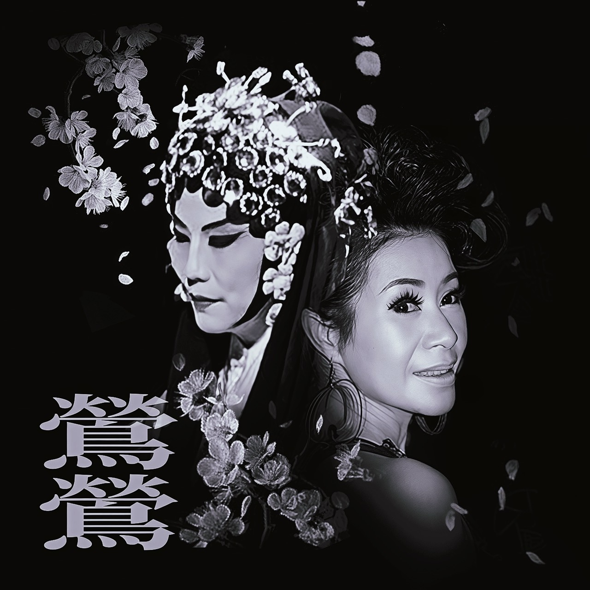

鶯鶯姊的心靈熱線
❤️
有什麼煩惱，說出來就舒服多了！

請選擇您的煩惱類型...
💼 工作不順心
💔 感情問題
💰 金錢煩惱
👨👩👧👦 家庭關係
🏥 健康問題
👥 人際關係
📝 其他煩惱（自訂）
🎙️ 鶯鶯姊開示
語音角色：
鶯鶯姊（曉臻 - 台灣女声）
溫柔姊（曉雨 - 台灣女声）
暖心哥（雲哲 - 台灣男声）
曉曉（中國女声 - 活潑）
雲希（中國男声 - 清朗）
曉伊（中國女声 - 甜美）
瀏覽器預設語音
Edge TTS
語速:
音調:
🎵 試聽
⚠️ 請使用 Chrome 或 Edge 瀏覽器以獲得最佳語音體驗
🔊 朗讀